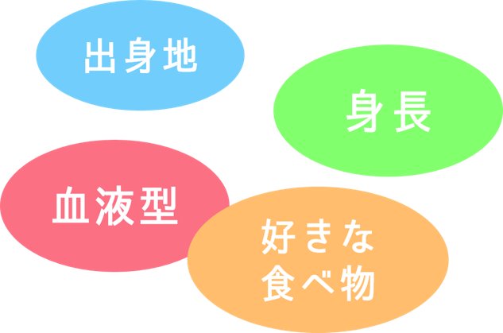
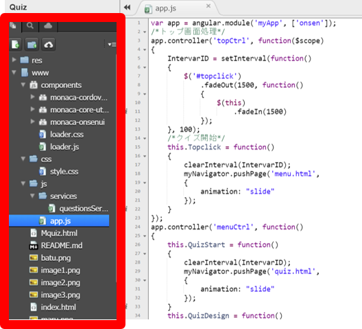

<ons-page ng-controller="contentCtrl as content">
    <div ng-show="process1">
        <div style="text-align:center;margin:0 5vw;margin-top:10vh;font-size: 7vw;"> クイズテーマを決めよう。 </div>
        <p id="image1">  </p>
        <div class="next-btnP">
            <ons-button modifier="large" ng-click="content.next()" class="next-btn"> 次へ </ons-button>
        </div>
    </div>
    <div ng-show="process2">
        <div style="text-align:center;margin:10vh 5vw;font-size: 5vw;">パソコン画面の左側にあるメニュー</br>から<span style="color:red">app.js</span>をクリックしよう。 </div>
        <p id="image2">  </p>
        <div class="next-btnP">
            <ons-button modifier="large" ng-click="content.next2()" class="next-btn"> 次へ </ons-button>
        </div>
    </div>
    <div ng-show="process3">
        <div style="text-align:center;margin:0 5vw;margin-top:10vh;font-size: 7vw;"> <span style="color:red">263</span>行目に問題文を入力</br>しましょう。 </div>
        <div class="next-btnP">
            <ons-button modifier="large" ng-click="content.next3()" class="next-btn"> 次へ </ons-button>
        </div>
    </div>
    <div ng-show="process4">
        <div style="text-align:center;margin:0 5vw;margin-top:10vh;font-size: 7vw;"> 選択肢(間違い)</br><span style="color:red">264</span>行目</br>
            </br> 選択肢(答え)</br><span style="color:red">265</span>行目</br>
            </br> それぞれ入力してみよう。 </div>
        <div class="next-btnP">
            <ons-button modifier="large" ng-click="content.next4()" class="next-btn"> メニューへ </ons-button>
        </div>
    </div>
</ons-page>